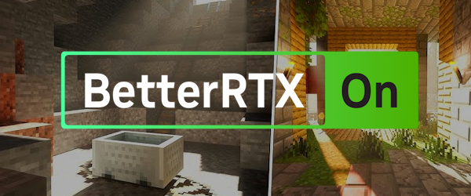

Marketplace auto-detect
Finds your installed Actions & Stuff copy automatically. No digging through hidden game folders.
A free, community-built patcher that makes your own copy of Actions & Stuff work with ray tracing: BetterRTX lighting, true reflections and PBR materials for every mob, item and block.
Showcase
In-game footage courtesy of patch creator J4vi3r6003. Share yours in the Discord thread for a chance to be featured here.
Setup
The patched pack is built around BetterRTX lighting. Follow the official installer at bedrock.graphics first, then come back here.

Download Actions & Stuff
from the Marketplace and open Minecraft once so the pack is on disk. A .zip or
.mcpack copy works too.
Download the patcher,
launch it and press Patch from Marketplace. It finds your copy, applies the latest patch
and writes a ready-to-import .mcpack.
Info
Your original pack is never modified. The patcher reads your copy, applies a binary diff and writes a new pack next to it. Press Adjust Settings for RTX in the patcher to apply the recommended video settings, including turning off Mob Dithering.
Double-click the generated .mcpack, then order your global resource packs from top to bottom:
Please don't share patched copies
This is a community RTX enhancement for Actions & Stuff by Oreville Studios. Each player patches their own purchased copy, so keep your patched pack to yourself.
Features
Finds your installed Actions & Stuff copy automatically. No digging through hidden game folders.
Adds RTX materials, PBR textures and lighting fixes so every A&S model looks right under ray tracing.
New patch versions come straight from the Patch Library, so updates arrive without reinstalling the app.
Applies recommended video settings, or open the full options.txt editor in Advanced Mode.
Finds and removes old patched versions, so outdated packs don't pile up in your resource pack list.
Build your own .vcdiff patches, extract brarchives and pack deterministic ZIPs for releases.
How it works
The patcher only ships the difference between the original pack and the RTX version. It rebuilds the result from the copy you already own.
.vcdiff
.mcpack
.brarchive, .zip or .mcpack..vcdiff diffs with xdelta3..mcpack with an updated manifest.Project ecosystem
Credits
Patch development, subpacks, bug fixes
Discord: error90099900
Project maintenance, patcher updates, releases
GitHub · Discord: felixchaos
Original creator, source files provider
💙 Support on Ko-fiBug reports, testing and feedback
Join us on Discord